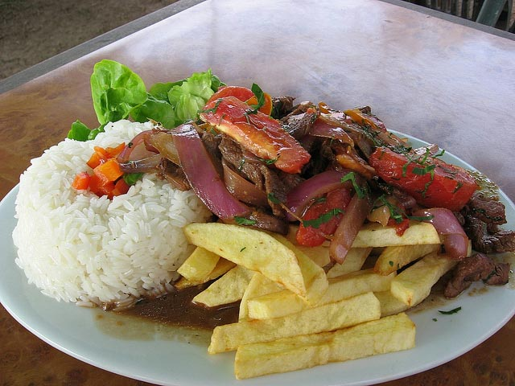

Favoritos:


Historial
Preparando un rico ceviche
15 de Noviembre del 2018
Ingredientes
- 1 kg de pescado del día
- 250 ml de jugo de limón con 2 ml de pisco (opcional)
- 2 grs de ajo picado
- 100 grs ají fresco picado (limo o verde)
- 50 grs de apio picado (opcional)
- 5 grs de kion rallado (opcional)
- 100 grs cebolla cortada a la pluma
- 50 grs rocoto en rodajas
- 10 grs. de culantro picado
- 2 cubitos de hielo
- 150 grs de cancha o choclo sancochado
Preparación
Lavar el pescado y cortarlo en cubos. Sazonar con sal y pimienta. Cubrir con el jugo de limón. Agregar el ajo, el ají, el apio, el kion y el hielo. Dejar reposar unos minutos y servir sobre hojas de lechuga y colocar encima la cebolla. Servir con la cancha, el choclo y los camotes sancochados. Adornar con las rodajas de rocoto y espolvorear con el culantro picado.
Escribe un comentario.
Publicar
Receta de lomo saltado
13 de Noviembre del 2018
Ingredientes
- Lomo en trozos
- 100 grs cebolla cortada en juliana
- 40 grs de ají amarillo cortado en juliana
- 150 grs de tomate cortado en juliana
- 15 grs de culantro
- 300 grs amarillas cortadas para freír
- Aceite Cocinero
Preparación
En una sartén, echa aceite Cocinero y deja que caliente durante 4 minutos. Luego, agrega la carne. Después de 2 minutos, retírala. En la misma sartén, echa la cebolla y el ají amarillo. Cuando estén doraditos, vuelve a poner la carne. Agrega el tomate y el culantro y deja que se cocinen hasta que la carne esté en su punto. En otra sartén echa aceite Cocinero, la cantidad suficiente para que las papas queden sumergidas en él. Déjalo calentar durante 5 minutos y echa las papas. Deja que se frían durante 12 minutos. ¡Listo! Retíralas de la sartén y ponlas en un plato con papel absorbente, para quitar el exceso de aceite. Sirve el lomo saltado acompañado de arroz blanco graneadito y una deliciosa ensalada fresca. ¡A disfrutar!
Escribe un comentario.
Publicar